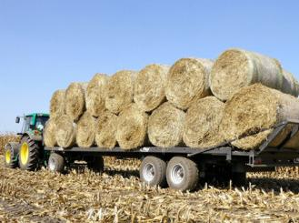

Сено с доставкой на дом

Доставка сена осуществляется только по предварительной договоренности в пределах Доволенского и Краснозерского районов.
В другие районы продажа сена только с самовывозом. Узнать подробности можно по телефону.
При самовывозе погрузка полностью бесплатна и производится в любое удобное для вас время!
Для заказа сена звоните по телефонам 8 (903) 938-21-22,
8 (913) 792-1547, 8 (383) 54-23-210 или отправьте заявку по электронной почте nik-weter@yandex.ru